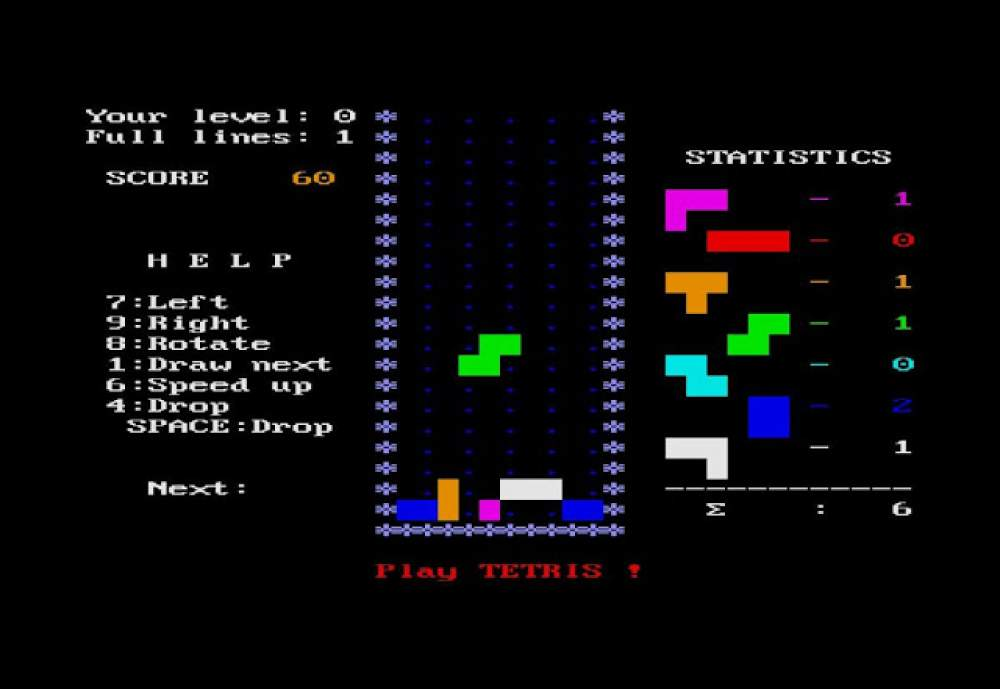
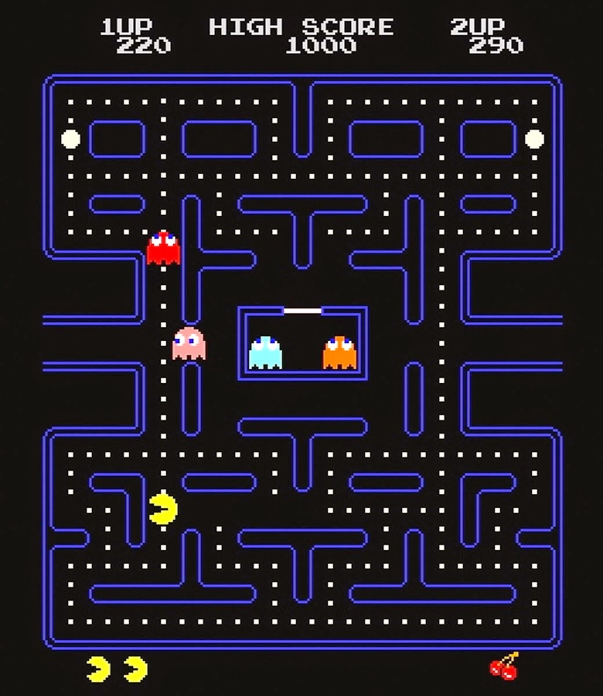
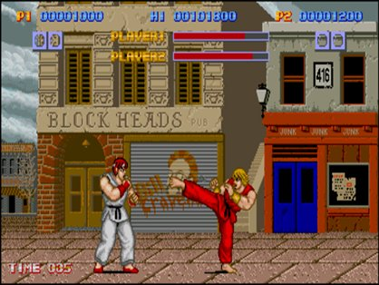
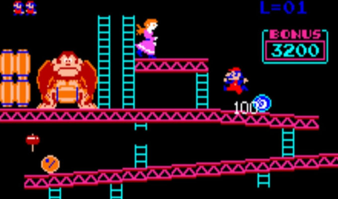
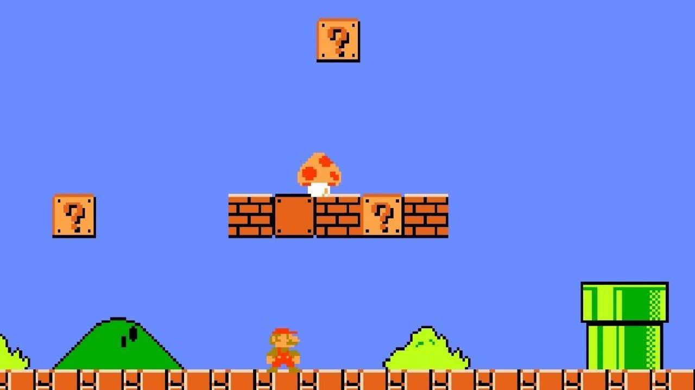

Game Zone
Welcome to Game Zone

Década de 1980 a 1990
Top 5: Tetris
Es un juego creado en 1984. Se trata colocar a elección las figuras que van apareciendo evitando que se amontonen y lleguen arriba de forma que no puedan caer más figuras.
Top 4: Pac-man
Un videojuego creado en 1980 que se basa en un círculo amarillo que aparece en laberintos donde debe comer puntos pequeños, puntos mayores y otros premios con forma de frutas y otros objetos para pasar de nivel.
Top 3: Street Fighter
El juego original se creo en 1987 y basicamente se centra en la lucha de personajes controlados por jugadores.
Top 2: Donkey Kong
Es un juego creado en 1981 que se centra en controlar al personaje sobre una serie de plataformas mientras evita obstáculos.
Top 1: Super Mario Bros
Juego creado en 1985 y que popularizo el personaje de Mario, convirtiendolo en el icono de nintendo. El juego se centra en controlar al personaje mientras intenta atrapar al enemigo.
Noticias

We add new free website templates frequently.
You can remove any link to our websites from this template you're free to use the template without linking back to us.

This is just a place holder so you can see how the site would look like.
The template is designed by free website templates for you for free you can replace all the text by your own text.
Play Now


Template Beauty
If you're looking for beautiful and professionally made templates you can find them at Template Beauty.